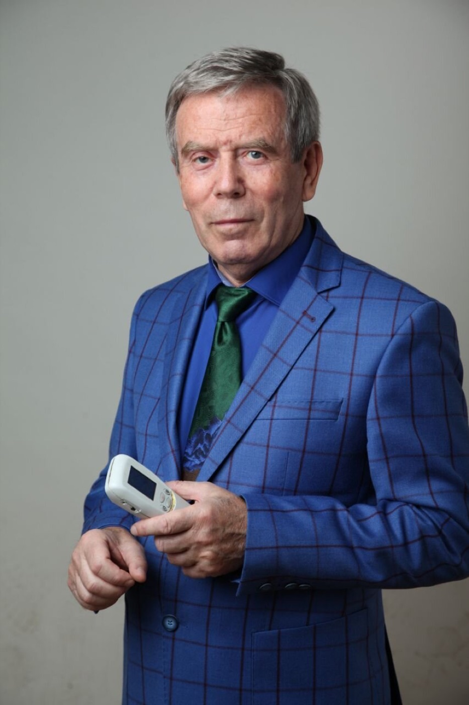

Константин Владимирович Никитин
Основатель центра · международный преподаватель СКЭНАР-терапии
В 1971 году окончил лечебный факультет Томского медицинского института. С 1972 года работал ассистентом кафедры морфологии Томского медицинского университета.
В 1998 году прошёл переподготовку по физиотерапии в Российской медицинской академии последипломного образования и занялся развитием методологии СКЭНАР-терапии. В 2000 году открыл клинику СКЭНАР-терапии в Томске.
Разработки и признание
Разработал несколько оригинальных внешних электродов для аппаратов СКЭНАР и авторские методики. Результаты клиники представлены на 14 научно-практических конференциях, семь из них — международные. С 2014 года — сотрудник ОКБ «РИТМ». Провёл шесть обучающих семинаров для врачей в США, Германии, Австрии, Болгарии и Мексике. Зарегистрирован в ФРМР.
Награды и выступления
- 2012Медаль имени Рудольфа Вирхова (Ганновер) — за доклад о комплексном лечении грыж межпозвонковых дисков
- 2015Юбилейная медаль ОКБ «РИТМ» за развитие и продвижение СКЭНАР-терапии
- 2020Доклад в Екатеринбурге о лечении пациентов с COVID-19 методами клиники